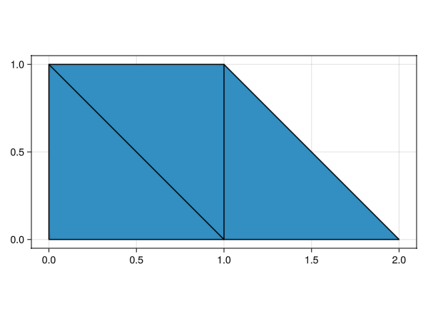

Mesh generation
To create mesh objects M::AbstractMesh one can use external mesh generators (gmsh at the moment), the built-in Cartesian mesh generator, or instantiate meshes from raw data.
Gmsh meshes
Meshes generated with gmsh can be transformed into GalerkinToolkit mesh objects using functions mesh_from_gmsh and mesh_from_msh. The physical groups defined within gmsh will be transformed into face groups in the GalerkinToolkit mesh, which is useful to impose boundary conditions. We use Gmsh.jl under the hood as the wrapper to the Julia API of gmsh.
A mesh from a msh file
Function mesh_from_msh reads and crates a mesh object from a .msh file (the default format used by gmsh to export meshes).
GalerkinToolkit.mesh_from_msh — Function
mesh_from_msh(msh_file;kwargs...)Create a mesh object from a .msh file found in path msh_file.
See also mesh_from_gmsh and with_gmsh.
Keyword arguments
complexify=true[optional]: Ifcomplexify==true, the mesh will be completed with all low dimensional faces into a face complex.renumber=true[optional]: Ifrenumber==true, thengmsh.model.mesh.renumberNodes()andgmsh.model.mesh.renumberElements()will be called.- Any other keyword argument will be passed to function
with_gmsh.
Level
Beginner
Example
We create a mesh from a .msh file and visualize it. In this case, we only visualize the 2-faces in the mesh. We color them according to the face group named "sides". Faces in the group are visualized in orange and other faces in blue. This face group is only defined for 2-faces. If you visualize the 3-faces (as by default), you would not see this face group.
import GalerkinToolkit as GT
import GLMakie as Makie
#Read the mesh
assets_dir = normpath(joinpath(@__DIR__,"..","..","..","assets"))
msh_file = joinpath(assets_dir,"model.msh")
mesh = GT.mesh_from_msh(msh_file)
#Visualize it
fig = Makie.Figure()
ax = Makie.Axis3(fig[1,1];aspect=:data)
Makie.hidespines!(ax)
Makie.hidedecorations!(ax)
color = GT.FaceColor("sides")
GT.makie_surfaces!(mesh;dim=2,color)
GT.makie_edges!(mesh;color=:black)
Meshes from GMSH Julia API
It is also possible to generate meshes in Julia code using the gmsh API and then convert them to GalerkinToolkit objects. This is done with two functions: See also with_gmsh and mesh_from_gmsh.
GalerkinToolkit.with_gmsh — Function
with_gmsh(f[;options])A safe way of initialize and finalize the gmsh module. The given function is called f(gmsh) on the gmsh module after is has been initialized. The module is finalized automatically when the function returns.
The optional keyword argument options is a vector for pairs k=>v containing gmesh options. Each of these options are set with gmsh.option.setNumber(k,v) just after gmsh has been initialized.
Level
Beginner
GalerkinToolkit.mesh_from_gmsh — Function
mesh_from_gmsh(gmsh::Module;complexify=true)Create a mesh objects from the current state of the gmsh module. If complexify==true, the mesh will be completed with all low dimensional faces into a face complex.
See also mesh_from_msh and with_gmsh.
Level
Beginner
Example
We generate a simple 2d mesh with the gmsh Julia API.
import GalerkinToolkit as GT
import GLMakie as Makie
#Generate mesh with GMSH Julia API
mesh = GT.with_gmsh() do gmsh
mesh_size=0.04
T=2
N=100
R = 0.15
dim = 2
gmsh.option.set_number("General.Verbosity", 2)
rect_tag = gmsh.model.occ.add_rectangle(0,0,0,1,1)
circle_tag = gmsh.model.occ.add_circle(0.5,0.5,0,R)
circle_curve_tag = gmsh.model.occ.add_curve_loop([circle_tag])
circle_surf_tag = gmsh.model.occ.add_plane_surface([circle_curve_tag])
gmsh.model.occ.cut([(dim,rect_tag)],[(dim,circle_surf_tag)]);
gmsh.model.occ.synchronize()
domain_tags = [1]
outer_tags = [6,7,8,9]
inner_tags = [5]
gmsh.model.model.add_physical_group(dim,domain_tags,-1,"domain")
gmsh.model.model.add_physical_group(dim-1,outer_tags,-1,"outer")
gmsh.model.model.add_physical_group(dim-1,inner_tags,-1,"inner")
gmsh.option.set_number("Mesh.MeshSizeMax",mesh_size)
gmsh.model.mesh.generate(dim)
#Transform it to a mesh object
GT.mesh_from_gmsh(gmsh)
end
#Visualize
fig = Makie.Figure()
axis = (;aspect=Makie.DataAspect())
shading = Makie.NoShading
ax,sc = GT.makie_surfaces(fig[1,1],mesh;axis,shading)
GT.makie_edges!(mesh;color=:black)
Makie.hidespines!(ax)
Makie.hidedecorations!(ax)
Cartesian meshes
GalerkinToolkit comes with a built-in Cartesian mesh generator implemented in function cartesian_mesh.
GalerkinToolkit.cartesian_mesh — Function
cartesian_mesh(domain,cells_per_dir)Create a multi-dimensional Cartesian mesh. The dimension of the mesh is defined by the length of cells_per_dir. The number of cells in direction i is given by cells_per_dir[i]. The extends of the Cartesian mesh are given in domain. The range in direction i covered by the mesh is given by domain[2*i-1,2*i].
Keyword arguments
boundary=true[optional]: Include faces on the boundary and generate face groups identifying which faces are on which face of bounding box of the mesh. The groups are named$d-face-$ifor the faceiof dimensiondof the bounding box.complexify=true[optional]: Generate all low dimensional faces so that the mesh is a face complex.simplexify=false[optional]: Generate a mesh of simplex faces instead of hyper-cubes.
Example
Generate a 3D Cartesian mesh of the box $(0,1)\times(-1,1)\times(3,4)$ with 10, 20 , and 10 cells in each axis.
import GalerkinToolkit as GT
import GLMakie as Makie
#Create mesh
domain = (0,1,-1,1,3,4)
cells = (10,20,10)
mesh = GT.cartesian_mesh(domain,cells)
#Visualize it
GT.makie_surfaces(mesh;axis=(;aspect=:data))
GT.makie_edges!(mesh;color=:black)
Example
Create a coarse cartesian mesh of the unit square with 4 and 4 cells in each axis. Visualize faces in all dimensions, shrinking them to avoid overlaps.
import GalerkinToolkit as GT
import GLMakie as Makie
#Generate mesh
domain = (0,1,0,1)
cells = (4,4)
mesh = GT.cartesian_mesh(domain,cells)
#Visualize it
axis = (;aspect=Makie.DataAspect())
shading = Makie.NoShading
shrink = 0.8
GT.makie_surfaces(mesh;axis,shading,shrink)
GT.makie_edges!(mesh;dim=1,shrink)
GT.makie_vertices!(mesh;dim=0)
Now, the same as before, but only generate low-dimensional faces on the boundary.
import GalerkinToolkit as GT
import GLMakie as Makie
#Generate mesh
domain = (0,1,0,1)
cells = (4,4)
mesh = GT.cartesian_mesh(domain,cells;complexify=false)
#Visualize it
axis = (;aspect=Makie.DataAspect())
shading = Makie.NoShading
shrink = 0.8
GT.makie_surfaces(mesh;axis,shading,shrink)
GT.makie_edges!(mesh;dim=1,shrink)
GT.makie_vertices!(mesh;dim=0)
Instantiating a mesh
Creating a mesh
The general way of creating an instance of the type Mesh is with function create_mesh. This is the lowest-level way of creating a mesh. Other more user-friendly ways of building a mesh are discussed in the Mesh generation section.
Example
In the following example, we generate and visualize a mesh of three first order triangles. Only faces of dimension 2 are present in this example. The arrays for vertices and edges are empty.
#Import dependencies
import GalerkinToolkit as GT
import GLMakie as Makie
import StaticArrays
#Node coordinates
T = StaticArrays.SVector{2,Float64}
node_coordinates = T[(0,0),(1,0),(0,1),(1,1),(2,0)]
#Face nodes
face_nodes_0 = Vector{Int}[]
face_nodes_1 = Vector{Int}[]
face_nodes_2 = [[1,2,3],[2,3,4],[2,4,5]]
face_nodes = [
face_nodes_0,
face_nodes_1,
face_nodes_2]
#Reference spaces
reference_spaces_0 = ()
reference_spaces_1 = ()
order = 1
triangle = GT.unit_simplex(Val(2))
triangle3 = GT.lagrange_space(triangle,order)
reference_spaces_2 = (triangle3,)
reference_spaces = (
reference_spaces_0,
reference_spaces_1,
reference_spaces_2)
#Create mesh
mesh = GT.create_mesh(;
node_coordinates,
face_nodes,
reference_spaces)
#Visualize
axis = (;aspect=Makie.DataAspect())
shading = Makie.NoShading
GT.makie_surfaces(mesh;axis,shading)
GT.makie_edges!(mesh;color=:black)
Example
In this other slightly more complex example, we define a mesh including faces of different dimensions: surfaces, edges and vertices. To be able to see all faces in the visualization, we need to "shrink" them. Otherwise, the surfaces would hide the edges and vertices.
#Import dependencies
import GalerkinToolkit as GT
import GLMakie as Makie
import StaticArrays
#Node coordinates
T = StaticArrays.SVector{2,Float64}
node_coordinates = T[(0,0),(1,0),(0,1),(1,1),(2,0)]
#Face nodes
face_nodes_0 = [[1],[3]]
face_nodes_1 = [[1,2],[2,5],[5,4]]
face_nodes_2 = [[1,2,3],[2,3,4],[2,4,5]]
face_nodes = [
face_nodes_0,
face_nodes_1,
face_nodes_2]
#Reference spaces
order = 1
vertex = GT.unit_simplex(Val(0))
vertex1 = GT.lagrange_space(vertex,order)
segment = GT.unit_simplex(Val(1))
segment2 = GT.lagrange_space(segment,order)
triangle = GT.unit_simplex(Val(2))
triangle3 = GT.lagrange_space(triangle,order)
reference_spaces_0 = (vertex1,)
reference_spaces_1 = (segment2,)
reference_spaces_2 = (triangle3,)
reference_spaces = (
reference_spaces_0,
reference_spaces_1,
reference_spaces_2)
#Create mesh
mesh = GT.create_mesh(;
node_coordinates,
face_nodes,
reference_spaces)
#Visualize
axis = (;aspect=Makie.DataAspect())
shrink = 0.8
shading = Makie.NoShading
GT.makie_surfaces(mesh;axis,shading,shrink)
GT.makie_edges!(mesh;dim=1,shrink)
GT.makie_vertices!(mesh;dim=0)
Creating a chain
Using function create_mesh might be tedious if all faces are of the same dimension. In this case, we can use the slightly simpler constructor create_chain. It works like create_mesh, but we pass data only for one face dimension.
Example
We create the mesh of the first example, but using create_chain.
#Import dependencies
import GalerkinToolkit as GT
import GLMakie as Makie
import StaticArrays
#Node coordinates
T = StaticArrays.SVector{2,Float64}
node_coordinates = T[(0,0),(1,0),(0,1),(1,1),(2,0)]
#Face nodes
face_nodes = [[1,2,3],[2,3,4],[2,4,5]]
#Reference spaces
order = 1
triangle = GT.unit_simplex(Val(2))
triangle3 = GT.lagrange_space(triangle,order)
reference_spaces = (triangle3,)
#Create mesh
chain = GT.create_chain(;
node_coordinates,
face_nodes,
reference_spaces)
#Visualize
axis = (;aspect=Makie.DataAspect())
shading = Makie.NoShading
GT.makie_surfaces(chain;axis,shading)
GT.makie_edges!(chain;color=:black)
This page was generated using Literate.jl.